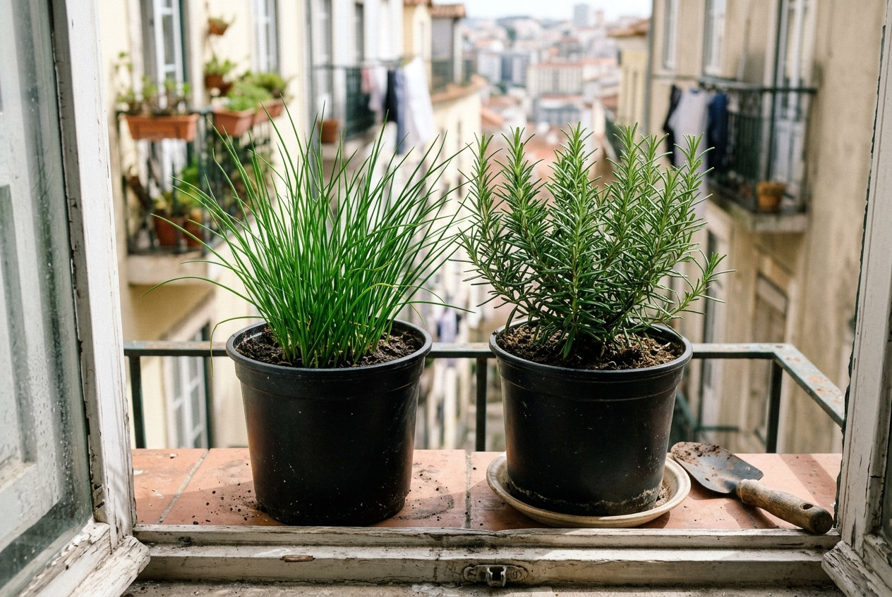
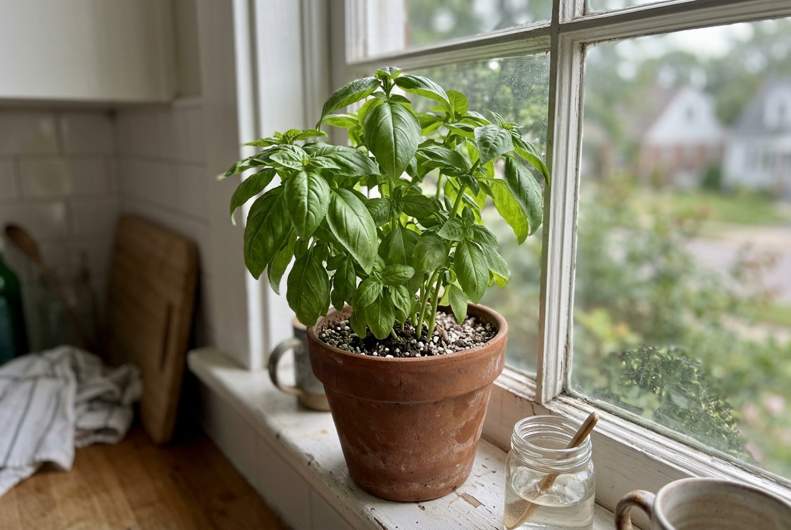
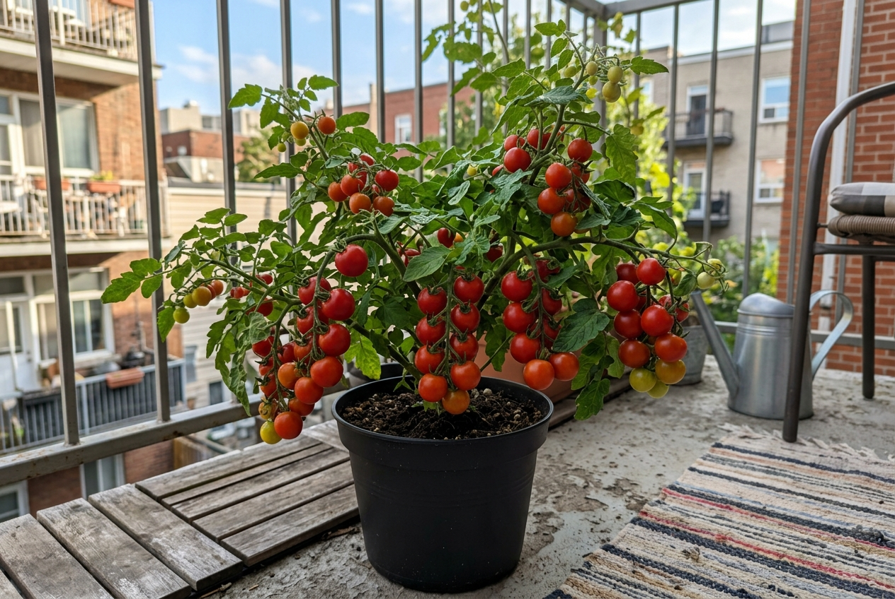
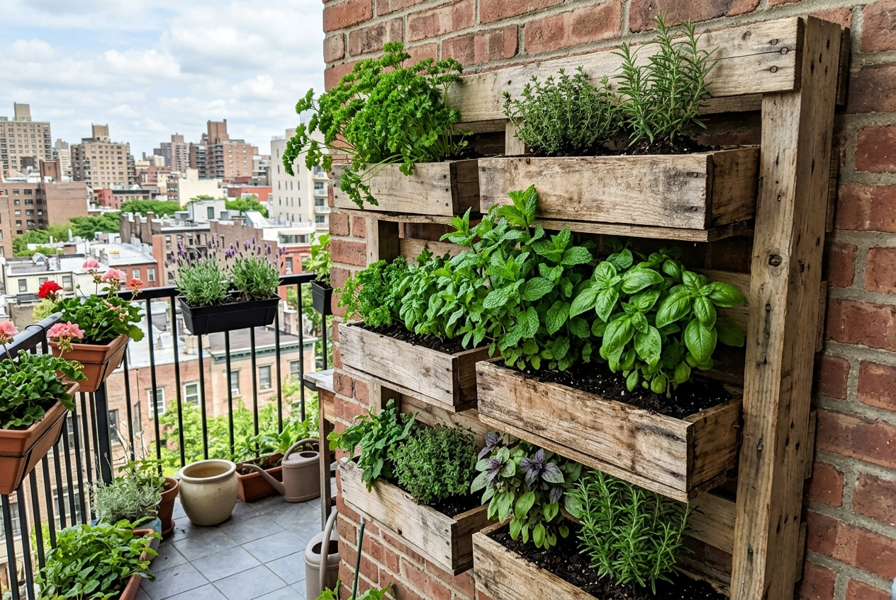

Aprenda a Cultivar Sua Própria Horta, Mesmo Começando do Zero
Descubra como plantar, cuidar e colher temperos, hortaliças e alimentos frescos com um método simples que começa no básico e evolui junto com você.

Talvez você já tenha passado por isso…
Cultivar plantas parece simples, mas sem a orientação certa pequenos detalhes colocam seu esforço a perder.
Você planta cheio de ânimo e, poucos dias depois, a planta começa a amarelar e morrer sem você entender o motivo.
Fica sempre na dúvida cruel se está colocando água demais ou deixando a terra seca por tempo excessivo.
Não sabe se a planta precisa de sol direto, meia-sombra ou apenas claridade indireta da janela.
Gasta dinheiro comprando vasos e terra pronta, mas não faz ideia se escolheu os materiais e drenagem corretos.
Quando as folhas amarelam ou secam sem motivo aparente, você se assusta e não sabe como salvar.
Sonha em colher temperos frescos direto do pé para cozinhar, mas nunca sabe por qual espécie começar.
Na maioria das vezes, o problema não é falta de cuidado ou de dedo verde. É apenas falta de orientação prática.
Conheça o Horta Infinita
Um guia completo criado para você aprender a cultivar desde o primeiro vaso até técnicas mais avançadas.
Funciona para qualquer espaço:
COMEÇAR
Descubra o melhor ponto do seu espaço e os recipientes certos sem gastar quase nada.
PLANTAR
Prepare a terra com drenagem perfeita e plante sementes ou mudas com segurança.
CUIDAR
Rotina simples de rega, poda e nutrição em poucos minutos por semana.
EVOLUIR
Multiplique suas plantas, renove seus vasos e otimize cada centímetro disponível.
COLHER
Colha temperos e alimentos frescos cultivados pelas suas próprias mãos.
O Horta Infinita é para você que…
Se você quer comida fresca e plantas saudáveis, este material foi pensado para você:
Nunca plantou nada
E quer dar os primeiros passos com clareza, sem perder plantas nem desperdiçar dinheiro.
Já tentou e não durou
Quer finalmente entender o que deu errado com a rega, terra ou sol e acertar de vez.
Quer temperos sempre à mão
Ter manjericão, salsa, cebolinha e orégano frescos a poucos passos do fogão.
Busca alimentos mais vivos
Consumir folhas e hortaliças colhidas na hora, sem agrotóxicos nem conservantes.
Quer economizar no mercado
Evitar que maços de tempero murchem na geladeira, colhendo só o que for consumir.
Procura um hobby relaxante
Desconectar das telas, mexer na terra e relaxar cuidando do seu próprio cultivo.
Qualquer tamanho de espaço
Desde uma janelinha de apartamento até um quintal com canteiros no chão.
Quer ir além do básico
Aprender multiplicação de mudas, podas corretas e técnicas para acelerar o crescimento.
Do primeiro vaso até uma horta completa
Uma jornada simples e progressiva em 9 módulos práticos:
🌱 Módulo 1 — Primeiros Passos
- Escolhendo o local ideal no seu espaço
- Entendendo a iluminação e horas de sol
- Tipos de vasos e drenagem sem sujeira
- Ferramentas essenciais sem gastar muito
🪨 Módulo 2 — Terra e Substrato
- Diferença entre terra vegetal e substrato
- Drenagem perfeita para raízes não apodrecerem
- Mistura ideal de solo para cada cultivo
- Como preparar a camada de fundo do vaso
🌾 Módulo 3 — Plantio
- Quando usar sementes vs. comprar mudas
- Profundidade ideal de plantio para cada semente
- Como acelerar a germinação
- Transplante seguro sem quebrar raízes
💧 Módulo 4 — Cuidados Diários
- O teste simples do dedo para nunca errar na rega
- Melhores horários para molhar as plantas
- Pequenas podas que fazem as folhas multiplicarem
- Como colher sem enfraquecer nem matar o pé
🥬 Módulo 5 — Hortaliças e Primeiros Cultivos
- Guia prático: cheiro-verde, salsa e cebolinha no vaso
- Folhas fáceis para o dia a dia: alface, rúcula e espinafre
- Segredos para folhas verdes sempre frescas e viçosas
- Dicas práticas para tomates cereja em recipientes
✂️ Módulo 6 — Podas e Multiplicação
- Técnicas de poda para renovar o crescimento
- Como estimular novas brotações sem danificar o ramo
- Multiplicação de mudas por galhos e estaquia
- Como colher mantendo sua planta viva por muito mais tempo
🪴 Módulo 7 — Vasos e Espaços Inteligentes
- Adaptação perfeita para janelas, sacadas e parapeitos
- Escolha e organização de recipientes funcionais
- Posicionamento estratégico para máxima luz e ventilação
- Como reabilitar plantas murchas e renovar seu vigor
🌿 Módulo 8 — Evoluindo sua Horta
- Organização para colher o ano inteiro
- Como multiplicar suas plantas por estaquia
- Consórcio inteligente: plantas parceiras
- Rotação simples para manter o solo fértil
💧 Módulo 9 — Técnicas Avançadas
- Introdução prática ao cultivo sem solo
- Hortas verticais para paredes e áreas pequenas
- Planejamento e rotação contínua para manter os vasos ativos
- Sistemas caseiros de autoirrigação para viagens
Tudo o que você precisa em um só lugar
Um guia digital prático, direto e organizado para você consultar a qualquer momento no celular, tablet ou PC.
Quem começou percebe que cultivar é mais simples
Deslize para ver as conversas de WhatsApp e fotos reais que nossos alunos nos enviaram:
Comece com o Essencial
O guia direto ao ponto com tudo o que você precisa para dar os primeiros passos hoje:
🌱 Horta Infinita Essencial
O guia direto ao ponto com os fundamentos necessários para começar hoje mesmo.
Ou Leve o Mais Completo ⭐
Para quem quer dominar o cultivo, montar sua horta e evoluir até colheitas fartas:
🌿 HORTA INFINITA — PACOTE MAIS COMPLETO
Aprenda a cultivar, montar seus vasos, cuidar da rotina e evoluir sua produção de forma contínua.
E você ainda recebe 4 materiais extras
Checklists e manuais práticos para acelerar seus resultados:
Calendário de Plantio
Saiba exatamente quais cultivos plantar em cada estação e temperatura do ano.
Checklist da Horta
Acompanhe facilmente os principais cuidados semanais com cada vaso.
Guia de Vasos e Drenagem
Como montar camadas perfeitas e escolher os recipientes certos sem gastar muito.
Plantas Fáceis para Começar
As espécies mais rápidas e resistentes para quem nunca plantou nada.
Imagine colher algo que você mesmo plantou
Temperos cheirosos e folhas frescas direto do vaso para o seu prato:




Você tem 7 dias para conhecer o Horta Infinita
Acesse o material, conheça todo o conteúdo prático e veja se ele faz sentido para você.
Caso queira utilizar a garantia dentro do prazo de 7 dias, basta solicitar conforme as condições da plataforma de pagamento. Seu reembolso será processado sem burocracias.
Perguntas Frequentes
Não. O conteúdo do Horta Infinita foi elaborado para acolher desde quem nunca colocou a mão na terra até quem já planta e quer melhorar os resultados. Tudo é explicado passo a passo, em linguagem simples e descomplicada.
Não. O conteúdo apresenta diferentes formas de cultivo e pode ser plenamente adaptado ao espaço que você tem disponível, seja em vasos pequenos, jardineiras, caixas ou estruturas verticais.
Sim! Uma grande parte do material é dedicada exatamente a entender o aproveitamento de luz em sacadas, varandas e peitoris de janela, além de soluções para manter a limpeza e a drenagem perfeita sem sujeira.
Sim. Os conceitos de preparo de solo, rotina de regas, rotação de cultivos e cuidados diários se aplicam tanto a vasos quanto a canteiros de chão e hortas maiores.
Não. Embora os temperos sejam excelentes para começar, o conteúdo também aborda hortaliças de folhas (alface, rúcula, espinafre), pequenos frutos como tomates e técnicas para diversos outros cultivos.
Sim. O pacote mais completo avança para temas como introdução à hidrocultura, cultivo sem solo, consórcio entre espécies, podas avançadas e planejamento para colheita contínua o ano inteiro.
O produto é 100% digital. Você não precisa esperar semanas pelo correio nem pagar frete. Pode ler no celular, tablet ou computador imediatamente após a confirmação.
Após a confirmação do pagamento, você receberá um e-mail com os dados de acesso imediato à biblioteca digital e a todos os bônus inclusos na sua compra.
Não! O valor apresentado é de pagamento único, sem qualquer tipo de mensalidade oculta ou renovação automática. Você paga uma única vez e o material é seu.
Sim. Você conta com 7 dias de garantia incondicional conforme o Código de Defesa do Consumidor e as regras da plataforma de pagamento. Se achar que o guia não é para você, basta solicitar o reembolso.
Sua horta não precisa começar grande. Ela só precisa começar.
Talvez hoje seja apenas um vaso no parapeito.
Depois dois.
Depois alguns temperos cheios de aroma para os almoços de domingo.
E, quando perceber, você terá aprendido uma habilidade útil e saborosa que vai acompanhar você por muitos e muitos anos.
O Horta Infinita foi criado justamente para tornar esse primeiro passo simples, seguro e prazeroso.